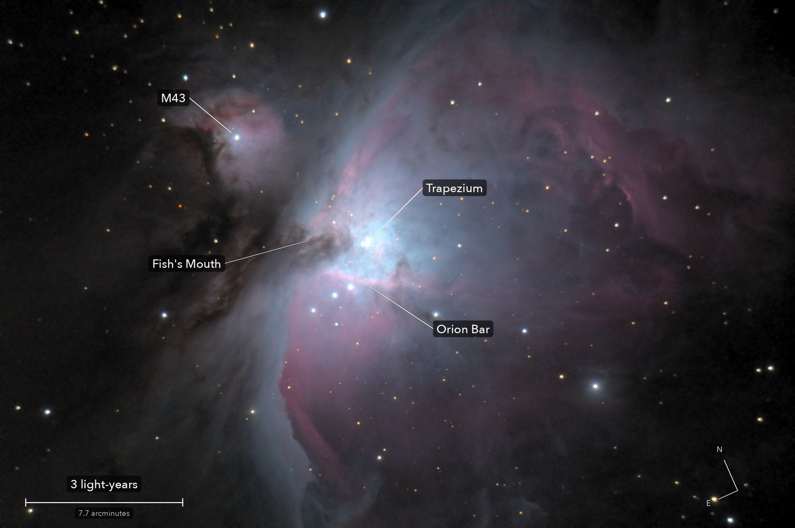

The Orion Nebula
Messier 42
A cloud of glowing gas where stars are being born right now. The four young stars at its heart, the Trapezium, light up the whole nebula.
What you are looking at

Swipe sideways to see the rest. Tap the picture for full size.
- Distance
- 1,344 light-years
- This picture spans
- 15 light-years
- The light left
- Around the year 680
- For scale
- Neptune's whole orbit would cover a fifth of one pixel
For photographers
13 minutes of light on one field, plus short frames so the core does not burn out.
- Exposures
- 39 x 20 s at ISO 3200 for the nebula; 16 x 2 s at ISO 800 for the core
- Frames
- 69 long frames taken, 39 kept. 30 lost to passing cloud (stars dimmed to between 3 and 77 percent)
- High dynamic range
- The 2 s stack replaces the 20 s stack wherever any frame came within 7 percent of clipping: 31 star cores, the Trapezium among them. Measured ratio 41.0, expected 40
- Sampling
- 0.776 arcsec per pixel: one pixel per 2 x 2 colour cell. Stars 4.2 arcsec wide
- Field
- 38.8 x 25.8 arcmin: one sensor frame
- When
- 4 October 2026, before dawn. 41 to 46 degrees up, 41 percent Moon in the sky, thin cloud passing
- Calibration
- Flat from 26 twilight-sky frames, its large-scale shape from cloud-lit frames. No darks
- Stacking
- RAW colour planes (no demosaic), hot pixels by 3 x 3 median, registered on stars with rotation, sigma-clipped mean. One sky constant per colour
- Finish
- Black 19 and white 217 of 255, gamma 0.95, S-curve 0.3. Saturation x 1.6 in CIELAB. Dark sky made neutral and smoothed (bilateral, 2.5 px)
- Telescope
- Celestron 8SE Schmidt-Cassegrain with dew shield: 203 mm aperture, 2,084 mm focal length (measured by plate solve), f/10.3
- Camera
- Sony a6000, stock, at prime focus: APS-C 23.5 x 15.6 mm, 6000 x 4000, 3.9 micron pixels, RAW
- Mount
- Sky-Watcher EQ6-R, unguided. Set down 27 degrees off the pole; both axes driven from a pointing model fitted to plate solves. Residual drift about 0.1 arcsec per second
© 2026 Brad Gessler · Celestron 8SE (8 inch, 2,080 mm) and Sony a6000 on an EQ6-R · San Francisco Bay Area · 4 October 2026
Capture and mount: Observatory (Elixir on a Raspberry Pi 3). Stacking: numpy, OpenCV, rawpy. Plate solving: astrometry.net. Stacked from the camera's RAW frames. Nothing generated.
© 2026 Brad Gessler. The pictures and the words are his own; all rights reserved.